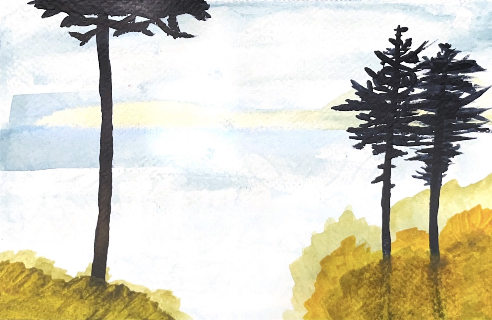

Project 3
Zariah, Felix, Andy, Katarina
Phase 1 - Zariah
Phase 2 - Felix
Pine Tree Dreams
She woke up from her dream and knew,
she had to find the place.
Where she had felt her soul at peace,
and gazed up into space.
She hopped on a bus and followed her gut,
To a sleepy Oregon road.
And there she breathed a silent prayer,
Just like her dream had showed:
It was 1.7 acres
You could sometimes smell the sea
And on the right, beside the fence
Grew that pair of old pine trees
She knew she had to have it,
but she didn't have the cash.
So she walked dogs for a New York banker,
And dug graves, and sold potash,
She gut fish in Ketchikan,
And sung in Wyoming
When her knuckles bled or her face burnt,
She remembered her dream.
It was 1.7 acres
You could sometimes smell the sea
And on the right, beside the fence
Grew that pair of old pine trees
When she'd finally earned enough,
she hurried to the coast
And down that quiet Oregon road,
to the land she needed most
Along the way, a feel of dread
Inside began to rise
A column of black rose ahead
And stained the empty skies
It was 1.7 acres
It smelled of soot now, not the sea
And on the right, beside the fence
Just ash — no old pine trees